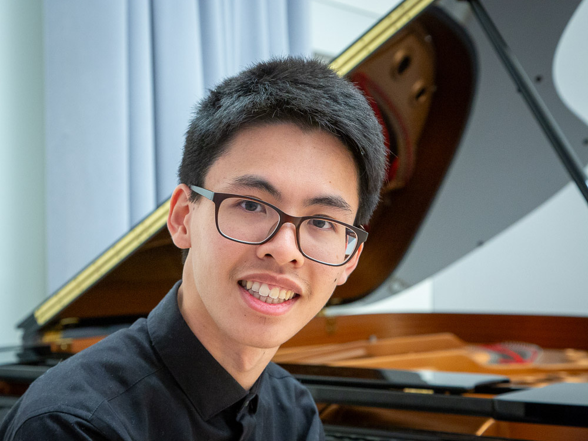
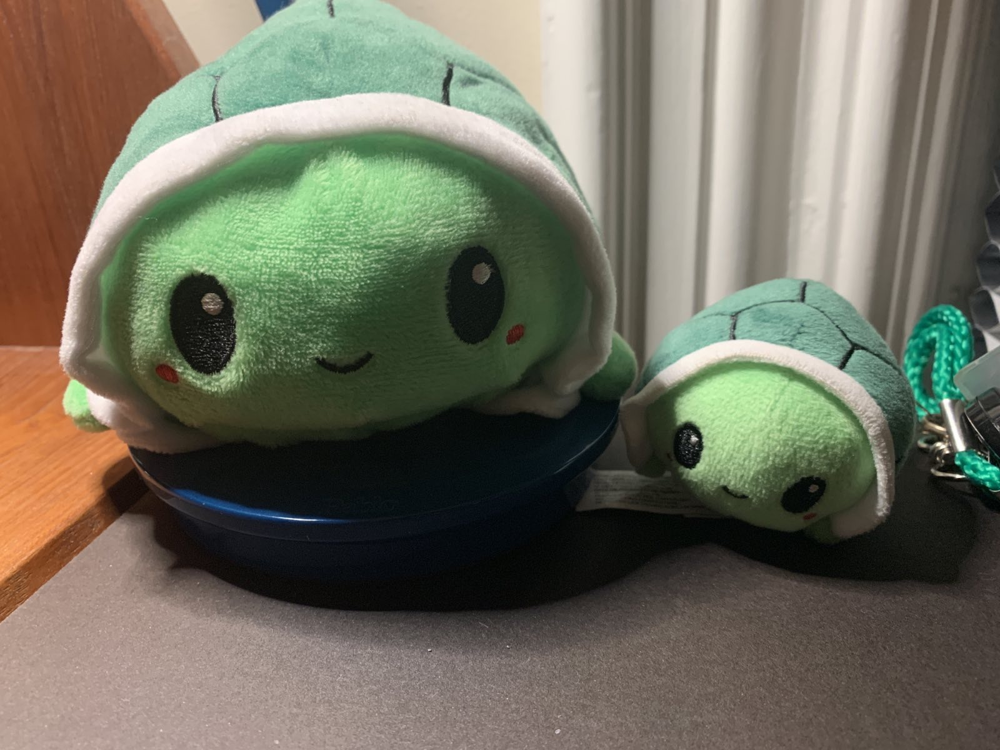

Hi!


I'm Holden!
About Me
I'm currently a research engineer at 0xPARC working on programmable cryptography. In my spare time, I like to work on my music projects. I recently graduated from MIT with a mathematics and music major, along with a physics minor. I grew up in Lisle, Illinois and I was part of Next House's 5W living group. Turtles are my favorite animal, and Maurice Ravel is my favorite composer.
Contact
You can reach me at hello@holdenmui.com.